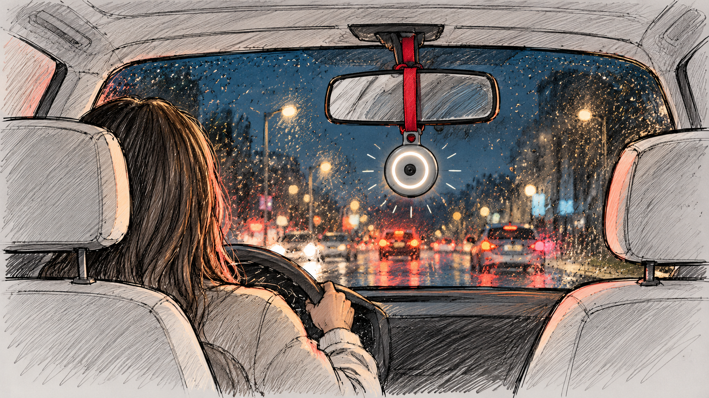

Female Interaction Design for TomTom
What if designing for women is less about appearance and more about understanding their needs?
For my BEng graduation project, I was invited by designer Hans de Gooijer to join a team exploring female interaction design for TomTom. Rather than relying on stereotypes about what makes a product appealing to women, we wanted to understand what they actually valued in an in-car device.
Through a questionnaire with 50 women, we discovered that safety was a major concern, from external threats to the risk of falling asleep while driving. Based on these findings, we developed TomTom Charm, a small device inspired by lucky charms hanging from rear-view mirrors. The concept combined an emergency button, sound and light alarms, location sharing and a camera to record incidents. We developed it into a non-functional 3D-printed prototype.
What I found most interesting was how the research challenged our initial expectations. Rather than leading us towards a distinctly feminine-looking product, it revealed a need we hadn't anticipated. It reinforced the importance of questioning assumptions and letting user research guide design decisions.
Looking back 11 years later, it's interesting to see similar personal safety products on the market, not only for cars but also for safety in public spaces. It shows how relevant this topic remains today.